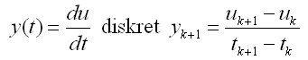

Der Differenzierer reagiert auf eine Sprungfunktion (Rechteck) mit einer Spitze, wie im Strukturbild zu erkennen.
Am linken Rand der Eingangsfunktion ist eine Steigungstangente dargestellt. Die Rechteckfunktion wird zu einer Spitze, der Sinus wird zu einem 90° verschobenen Sinus und die Dreiecksfunktion wird zu einer Rechteckfunktion. Da der Differenzierer als Regler die Änderungen erfäßt sagt man er berücksichtigt die Zukunft.
Weitere Informationen in der freien Enzyklopedie Wikipedia: D-Glied
Autor: Harald Schellinger